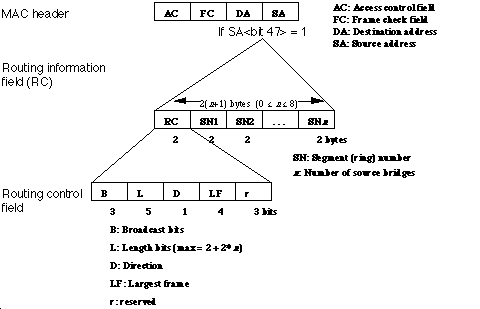

|
|
This Technical Note discusses source routing and its possible implementation in
token ring link layers.
[Jan 01 1992]
|
Introduction
"AppleTalk," in the words of Gursharan Sidhu, "is a network system." As
such, it provides for multiple types of media and data links, and token ring is
one such data link.
Source routing refers to a process on token ring networks where the source of a
packet indicates, to any bridges between the source and the destination, the
route a packet must take to get from the source to the destination. The
destination also uses this same route to transmit the response packet back to
the proper place. The presence of routing information is indicated by a 1 in
the most significant bit (MSB) of source address (SA) filed in the media access
control (MAC) header. For nodes on the same ring, note that routing
information is unnecessary.
Broadcast packets on a token ring always have their routing information bit
turned on (Figure 1), indicating to bridges between the source and destination
nodes that the route is to be inserted into the packet. For non-broadcast
packets, each source node (SN) determines whether routing information is
necessary, and hence either puts a 1 into the MSB of the source address and
appends the routing control field, or it doesn't. If the source routing bit is
set to one, the routing information field (RC) is inserted between the source
address (SA) field and the information field. With the source routing bit set
to 0, the information field would immediately follow the source address (SA)
field.
Each bridge puts its adjoining segment number into the next available SN field
in the routing information field. Thus, a destination node could receive
multiple packets from multiple bridges, and thus have several routes back to
the source.
|
Note:
The term broadcast here refers to link-level broadcasts.
This is not to be confused with AppleTalk broadcasts to the
AppleTalk address $FF. These types of broadcasts are destined only for
AppleTalk nodes on the link, not necessarily all nodes on the link.)
|

Figure 1. Routing Information and Routing Control Fields
Types of Broadcasts
At present, packets can be broadcast in one of three ways. The type of
broadcast is defined by three bits in the routing control field of the routing
information field (see Figure 1).
The types of broadcasts are as follows:
100
All-routes broadcast, non-broadcast return. Broadcast packets of this type
will travel along any possible path to the destination; thus the number of
packets received at the destination will equal the number of routes to the
destination node. Packets coming back to the source will travel along the same
route, in reverse order, as they did going to the destination.
110
Single-route broadcast, all-routes broadcast return. Broadcast packets of
this type will travel along a single route, passing through designated bridges
to the adjoining segment. Packets coming back to the source can possibly travel
along multiple paths to reach the source; thus, the first packet received back
at the source will indicate the best route between the destination and the
source. A network administrator will set up the designated bridge as one that
will forward this kind of broadcast. (Note that rev F of the TMS380 Adapter
Chipset User's Guide Supplement, which describes these bits on page 7-4,
incorrectly documents the bits, 111, to this type of broadcast.)
111
Single-route broadcast, non-broadcast return. Broadcast packets of this
type will travel along a single route, passing through designated bridges to
the adjoining segment. Packets coming back to the source will travel along the
same route, in reverse order, as they did going to the destination. A network
administrator will set up the designated bridge as one that will forward this
kind of broadcast. (Note that rev F of the TMS380 Adapter Chipset User's
Guide Supplement, which describes these bits on page 7-4, incorrectly
documents the bits, 110, to this type of broadcast.)
For directed transmissions between several bridges, the broadcast bits are 000.
This indicates that the route is already present in the segment numbers, and
the packet travels in a directed manner to the destination.
Back to top
Source Routing on Apple's TokenTalk Card
Apple's TokenTalk Card is built upon the Macintosh Coprocessor Platform. Much
of the TokenTalk software consists of dynamic A/ROSE tasks running on the card.
Developers can use the services of TokenTalk Prep (documentation of which is
available on the TokenTalk NB Programmer's Guide), and the actual source
routing is done with a SNAPXmit. SNAPXmit does the exact same thing as LLCXmit,
but it doesn't do source routing for you, nor do you have to specify a service
access point (SAP).
Essentially, we have two types of packets to transmit: broadcast packets and
individual directed packets.
For broadcast packets, which include functional address transmissions, group
address transmissions, and all-stations broadcast transmissions, we add source
routing information. For TokenTalk, the broadcast type is all-routes broadcast,
non-broadcast return.
For individual directed packets, we have to determine if the destination is on
our ring or not. If it is not then we must append the routing information to
the packet. Where does the route come from? If we've been smart, we've been
gathering routes from any broadcast packet we receive, and saving them away. We
want to have a couple of tables on which to store the information: a table that
maps destination nodes to ring numbers (segment numbers), and a table that maps
ring numbers to routes. If we are asked to transmit an individual packet, we
simply look up the destination ring number (compare it with our own ring number
to determine whether routing information is necessary) and then look up the
route for the ring we just looked up. Once we have a match, we just append the
routing information and transmit the packet. Everything's hunky- dory.
"But," you ask, "what if I don't have the route?" That is, what if there's no
ring number mapped to the destination address? You'll have to find the best
route and then send it along. We do this by queuing the original request
momentarily, packing up a Logical Link Control (LLC) test command packet,
putting the desired destination address into the packet, and setting the
broadcast type to "single-route broadcast, all-routes broadcast return." This
means we'll get back (potentially, if there's more than one route) many
responses with routes in them. Hopefully the first such packet we receive will
indicate the best route because it took the shortest amount of time to reach
us.
Now, you're probably asking yourself: "What did you mean when you said, `If
we've been smart, we've been gathering routes from any broadcast packet we
receive'?" Even better, every TokenTalk packet broadcast at the link layer will
have this source routing information in it. Therefore, every TokenTalk packet
will contain the route back to the source and we can "glean" this information
and store it in our tables. This is where the direction bit comes in handy. If
the direction bit is 1, then the furthest segment is the last segment number in
the routing information field, that is, the rightmost. Conversely, if the
direction bit is 0, then the furthest segment is the first segment number in
the routing information field, that is, the leftmost. This furthest segment
indicates the ring number the source is actually on, and we can add this source
ring number to our table. We can also add (or update) our ring number to route
table.
"What if the entries in this table just sit around--potentially after a node is
no longer reachable?" That's a good question. Again, we'll use a common
practice for such tables: each entry in our table should have some "age"
associated with it, and when the "age" gets too old, we delete the entry from
our table. The worst thing that can happen from such a deletion is we'll have
to go through the route discovery process again.
Back to top
Conclusion
Source routing is necessary for any token ring link to function. Thus,
hopefully, you have a clear recipe here for implementing that functionality in
your code.
Back to top
References
TokenTalk NB Programmer's Guide, Chapter 2, "Source Routing
Support", APDA, M0827LL/A
IBM Token-Ring Network Architecture Reference, Chapter 3, "MAC
Frame Format", IBM Corporation, SC30-3374--01
TMS380 Adapter Chipset User's Guide, Texas Instruments, SPWU001D
TMS380 Adapter Chipset User's Guide Supplement, Chapter 7, Texas
Instruments, SPWU003
J. Scott Haugdahl: Inside the Token-Ring, Chapter 3, "Standards
and Protocols", Architecture Technology Corporation, 1986
Back to top
Downloadables
|

|
Acrobat version of this Note (120K)
|
Download
|
Back to top
|